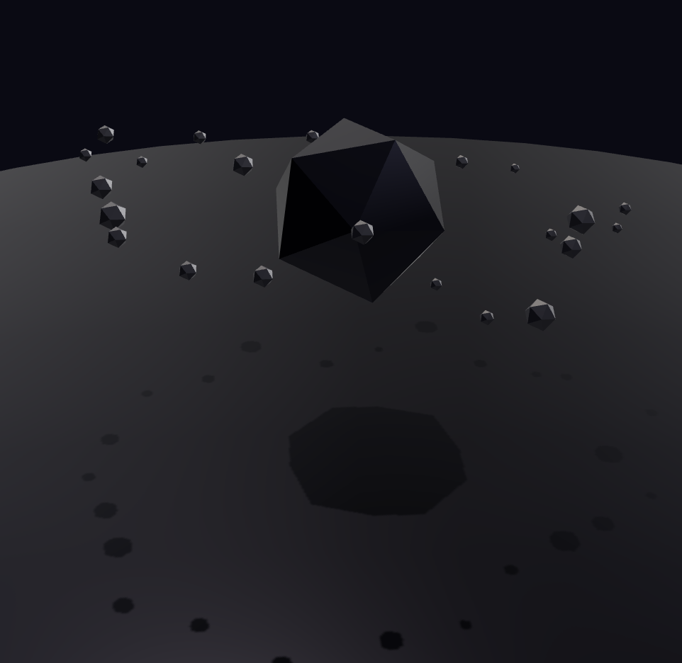

A lightweight imperative three.js app shell, rebuilt small.
createApp + a small module contract. Deterministic clock,
seeded rng, unidirectional state flow, strict dispose chain. The
successor core of threejs-scenes v3.
What it is
State flows down — store → module.update → scene,
once per simulation tick. Input flows back only through
setState/dispatch, never straight into scene
objects. Same seed + same tick sequence reproduce the exact same world,
headless included.

Core ideas
Deterministic clock
A fixed-step clock decouples simulation ticks from frame rate, so the same seed and tick sequence always reproduce the same world — headless included.
Seeded rng
One seeded RNG threads through app state, so anything that reads randomness stays reproducible run to run.
Unidirectional state flow
State flows down through module.update once per tick; input flows back only through setState/dispatch.
Strict dispose chain
Every module tears down cleanly. app.dispose() walks the chain so nothing leaks between scenes.
Post-processing
Post-processing is a pluggable module, same contract as the lighting and
orbit modules: drop postProcessing() into use: []
and it owns the frame draw through a module render hook — no
composer wiring at the call site. The WebGL effect catalogue (bloom, god
rays, colour grade, DOF, CRT, glitch, chromatic aberration, and more) is
ported from threejs-scenes.
import { postProcessing } from '@tuomashatakka/threejs-scene/modules/postprocessing'
import { createChromaticAberration } from '@tuomashatakka/threejs-scene/modules/post/webgl/ca'
const app = createApp(canvas, {
use: [
standardLighting(),
postProcessing({
bloom: { strength: 0.8 },
effects: () => [ createChromaticAberration({ strength: 1.2 }) ],
}),
],
})Every effect's parameters are adjustable live in the interactive demo.
Layout
- lib/time
- Clock, loop — the fixed/variable-step simulation clock and the shared frame loop.
- lib/state
- Store, rng — the state container and the seeded random source threaded through it.
- lib/render
- Renderer, resize — three.js renderer setup and viewport-resize handling.
- lib/lifecycle
- Dispose — the strict teardown chain every module and the app itself follow.
- lib/input
- Pointer-gesture — input capture that only ever reaches the scene through
dispatch. - lib/app
- Composition root —
createApp, wiring clock, store, renderer and modules together. - modules/
- Behavior modules (lighting, orbit) built entirely on the public surface.
Quickstart
import { createApp, defineModule } from '@tuomashatakka/threejs-scene'
import { standardLighting } from '@tuomashatakka/threejs-scene/modules/lighting'
import { orbitControls } from '@tuomashatakka/threejs-scene/modules/orbit'
interface State { speed: number }
const turbine = defineModule<State>({
name: 'turbine',
build (ctx) { /* create objects once, add to ctx.scene */ },
update (state, frame, ctx) { /* project state onto them, every sim tick */ },
})
const app = createApp<State>(canvas, {
state: { speed: 1 },
seed: 7,
clock: { mode: 'fixed', step: 1 / 120 },
use: [ standardLighting(), orbitControls() ],
})
app.use(turbine) // runtime add; returned handle.remove() tears down
app.start() // or app.tick() for deterministic stepping
app.setState({ speed: 2 })
app.dispose()Install
Peer-depends on three >=0.160.0.
npm i @tuomashatakka/threejs-scene three